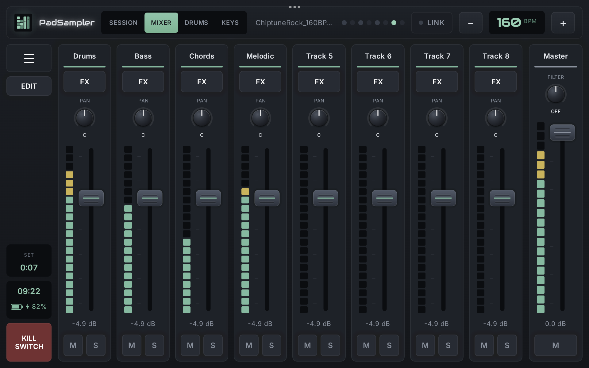
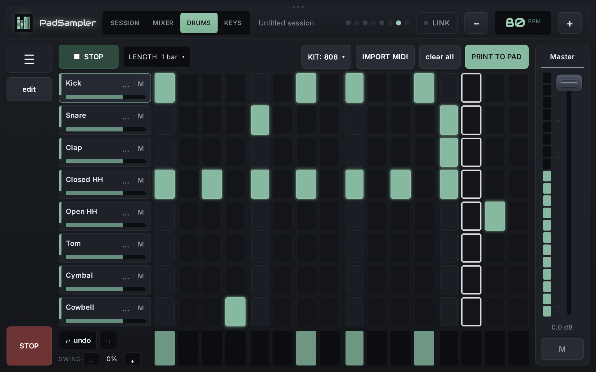
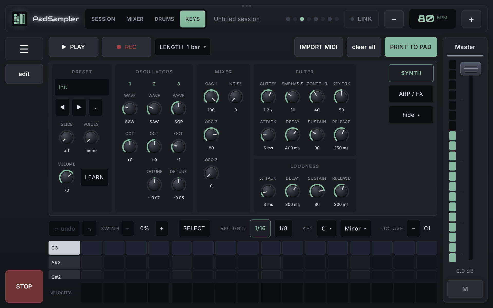

PadSampler uputstvo
Za PadSampler 2.0 na Androidu i Windowsu. Obje verzije rade isto; razlike su navedene. Natpisi u aplikaciji su na engleskom, pa su ovdje ostavljeni kako ih vidiš na ekranu.
1. Prvi koraci
- Instalacija. Windows: pokreni instaler sa stranice za preuzimanje. Android: instaliraj sa Google Playa.
- Izlaz zvuka. Android: žičane slušalice ili USB zvučna kartica daju najmanje kašnjenje; Bluetooth jako kasni i nije za sviranje uživo. Windows: otvori ⚙ i izaberi zvučnu karticu (vidi Podešavanja na Windowsu).
- Po želji: spoji Launchpad Mini MK3 preko USB-a. Na Android tabletu i telefonu treba USB-C OTG kabl ili adapter. PadSampler ga sam pronađe.
- Stavi semplove na padove (sljedeća poglavlja), podesi tempo i sviraj.
2. Ekran

Gornja traka (ista na svim ekranima)
- SESSION · MIXER · DRUMS · KEYS: četiri ekrana.
- Ime sesije: ime trenutne sesije.
- 8 tačkica: osmine trenutnog takta, pokazuju gdje je ritam.
- LINK: Ableton Link uključen/isključen (vidi Ableton Link).
- − BPM +: tempo, od 60 do 240 BPM. Dodir na broj otvara unos tempa.
Lijeva traka
- ☰ otvara meni: učitavanje semplova, sačuvaj / izvezi / učitaj / nova sesija, set lista, opcije Linka, status (MIDI i izlaz zvuka) i About.
- edit / done: režim za stavljanje semplova na padove.
- STOP (crveno, dolje): odmah zaustavlja sve, i Drums i Keys. Uvijek pri ruci.
Master
Glavni fejder i metar su desno, ispod je M (mute).
Poruke (sačuvano, printano, greške) se pojave na nekoliko sekundi dolje na ekranu.
3. Učitavanje semplova
- Dodirni edit lijevo (ili ☰ → Load samples). Padovi dobiju žuti okvir i ne sviraju dok je edit uključen.
- Dodirni pad. Otvori se dijalog pada:
- Browse library: pretraga i preslušavanje tvojih foldera sa semplovima (sljedeće poglavlje).
- Choose a file from storage: izbor WAV, AIFF ili MP3 fajla direktno.
- Loop (ponavlja se dok ga ne zaustaviš) ili One-shot (odsvira jednom do kraja).
- Original BPM of this sample: tempo u kojem je sempl napravljen. Set for all samples ga postavi za sve padove.
- Edit in Drums / Edit in Keys: za padove napravljene sa Print to pad.
- Remove sample: uklanja sempl.
- Kad završiš, dodirni done.
Semplovi se kopiraju u sesiju, pa rade i ako originalne fajlove pomjeriš ili obrišeš. Na padu piše ime foldera sempla, LOOP ili SHOT, i tonalitet ako je u imenu fajla ili foldera.
4. Biblioteka semplova
Biblioteka pravi spisak foldera u kojima držiš semplove, da ih brzo nađeš i preslušaš.
- Add folder: jednom izabereš folder sa semplovima. PadSampler ga pretraži, sa svim podfolderima. Rescan dodaje nove fajlove.
- Lijevo je stablo foldera (All samples = sve). Na uskom ekranu se otvara dugmetom Folders. Desno su semplovi izabranog foldera i njegovih podfoldera.
- Pretraga: sve riječi moraju biti u imenu fajla ili putanji.
- Filteri: All / Loops / One-shots, Near N BPM (loopovi blizu tempa sesije) i kategorije Drums, Bass, Keys, Vocals, FX (iz imena fajlova).
- Dodir na red pušta sempl, ponovni dodir ga zaustavlja. Može svirati originalnom brzinom ili u tempu sesije. Preslušavanje ide direktno na izlaz, ne zavisi od master fejdera i ne čeka takt.
- Use stavlja sempl na pad. Fill column popuni cijelu kolonu iz jednog foldera.
- Remove a library folder… ispod stabla uklanja folder iz biblioteke (tvoji fajlovi se ne diraju).
5. Sviranje klipova
- Kolona je track, red je scena. U jednoj koloni svira jedan klip odjednom.
- Dodir na pad: klip kreće na sljedećem taktu. Dok čeka, trepće. Drugi klip u istoj koloni zamijeni onaj koji svira tačno na taktu (uz kratko utišavanje).
- Dodir na klip koji svira: staje na sljedećem taktu. Dodir na klip koji čeka: start se poništava.
- ▶ 1 … ▶ 6 (desno od mreže) pokreću cijelu scenu na sljedećem taktu.
- Donji red: po jedno dugme za svaki track. Dugme za režim dolje desno mijenja red između STOP (zaustavi track na sljedećem taktu), SOLO i MUTE.
- STOP lijevo zaustavlja sve odmah.
- Pad koji svira svijetli i na donjoj ivici pokazuje dokle je stigao.
6. Tempo i razvlačenje
- Svaki sempl ima originalni BPM. Kad je tempo sesije drugačiji, PadSampler razvuče ili skupi sempl na taj tempo bez promjene visine tona (Rubber Band).
- Originalni BPM se čita iz imena fajla ili foldera, npr.
Funky Drums 124 BPM.wav. Ako ga nema, procijeni se iz dužine loopa (1, 2, 4, 8 ili 16 taktova). Može se ispraviti u dijalogu pada. - Prvi sempl u sesiji sa poznatim BPM-om postavi i tempo sesije.
- Tempo se može mijenjati i dok sve svira. Takt se promijeni odmah, semplovi se preračunaju u pozadini (prvo oni koji sviraju) i pređu na novu verziju na sljedećem taktu.
- Loop koji je blizu cijelog broja taktova razvuče se tačno na taj broj taktova, pa nikad ne „pobjegne“.
7. Mikser

- Za svaki od 8 trackova: PAN, metar, fejder sa vrijednošću u dB, M (mute) i S (solo).
- Fejder i pan se povlače. Dupli dodir na pan ga vrati na sredinu.
- Kanal Master je desno.
- Fejderi, pan, mute i solo se čuvaju u sesiji.
8. Drums (bubnjevi)

Pattern
- 8 zvukova (traka) × 16 koraka po taktu. Dodir na korak ga pali ili gasi.
- PLAY pokreće bubanj na sljedećem taktu. Svira dok ga ne zaustaviš (ili STOP). Promjena ekrana ga ne zaustavlja.
- LENGTH: 1, 2, 4 ili 8 taktova. Kod dužeg patterna se bira koji takt vidiš. Produžavanje kopira postojeće taktove u nove.
- SWING 0–100 %: svaka druga šesnaestina kasni.
- Traka jačine ispod mreže određuje jačinu svakog koraka izabranog zvuka. Tiši koraci su blijeđi.
- undo / redo (na Windowsu i Ctrl+Z / Ctrl+Y).
- clear all briše sve korake.
Zvukovi
- Dodir na ime zvuka ga odsvira i izabere. M utišava traku; crta ispod imena je jačina trake.
- KIT ▾ učitava ugrađeni kit: 808, 909, Electro, Lo-Fi. Koraci ostaju.
- … pored zvuka otvara njegov dijalog:
- BUILT-IN SOUND: vrsta (Kick, Snare, Clap, Rim, Closed HH, Open HH, Tom, Cymbal, Cowbell, Zap, Shaker) i oblikovanje sa TUNE, DECAY, TONE, SNAP, GRIT. ▶ ga pušta. Dupli dodir vraća potenciometar na početnu vrijednost.
- YOUR OWN SAMPLE: tvoj sempl iz biblioteke ili fajla.
- Clear steps (briše korake), Remove sound (uklanja zvuk).
Import MIDI
IMPORT MIDI čita .mid fajl. Note bubnjeva (General MIDI) idu na odgovarajuće trake: kick, snare,
clap/rim, zatvoren hi-hat, otvoren hi-hat, tom, činela, perkusije. Ako fajl ima više dijelova, biraš jedan.
Uvoz zamjenjuje korake; tvoji zvukovi ostaju.
9. Keys (sintisajzer)

Sintisajzer
- PRESET: ◀ ▶ redom kroz presete; … otvara spisak (27 ugrađenih po grupama Bass, Lead, Pad, Keys, FX), snimanje i brisanje svojih.
- GLIDE, VOICES (mono = jedan glas, legato; ili do 8 glasova za akorde), VOLUME.
- OSCILLATORS 1–3: WAVE (trougao, saw, kvadrat, širok i uzak puls; dodir mijenja), OCT, DETUNE (oscilatori 2 i 3).
- MIXER: jačina svakog oscilatora i NOISE (šum).
- FILTER: ladder low-pass 24 dB: CUTOFF, EMPHASIS (rezonanca), CONTOUR (koliko ga otvara anvelopa), KEY TRK, i svoja ATTACK / DECAY / SUSTAIN / RELEASE.
- LOUDNESS: anvelopa jačine.
- hide sklapa panel, da piano roll dobije više mjesta.
ARP / FX
- Arpeggiator: uključen/isključen, MODE (gore, dolje, gore/dolje, slučajno, kako je odsvirano), RATE (1/4 do 1/32, i triole), OCTAVES 1–4, GATE, HOLD. Svira u taktu, i iz patterna i u Print to pad.
- COLOR: DRIVE i CHORUS. DELAY: TIME (vezano za tempo), FEEDBACK, MIX (ping-pong). REVERB: SIZE, MIX.
- Učitavanje preseta ne mijenja arpeggiator i efekte.
Piano roll

- KEY i skala (Major, Minor, Dorian, Phrygian, Mixolydian, Harmonic minor, pentatonike, Blues, Chromatic): piano roll prikazuje samo note skale. OCTAVE − / + pomjera prikaz.
- Dodir na prazno polje dodaje notu, dodir na notu je briše. Tipke lijevo sviraju dok ih držiš.
- PLAY, LENGTH, SWING, traka jačine, undo / redo i clear all rade kao u Drums.
- SELECT: prevuci okvir oko nota ili dodirni note da ih izabereš, pa ih prevuci da ih pomjeriš, ili koristi ALL, ◀ ▶, to bar i DEL.
- IMPORT MIDI učitava melodiju iz
.midfajla (ako ima više dijelova, biraš jedan).
Snimanje uživo
- Pritisni ● REC. Ako Keys ne svira, dobiješ metronom i jedan takt odbrojavanja.
- Sviraj na tipkama na ekranu, Launchpadu ili MIDI klavijaturi. Pattern se vrti i svaki prolaz dodaje note.
- Ponovo pritisni REC da završiš snimanje; pattern svira dalje.
REC GRID (1/16 ili 1/8) određuje kako se poravnaju počeci nota. Jedan prolaz snimanja je jedan korak za undo.
10. Print to pad
PRINT TO PAD (na Drums i Keys) pretvori pattern u WAV loop i stavi ga na pad, pa ga pokrećeš kao svaki drugi klip.
- U mreži koja se otvori izaberi pad. Pad koji već ima sempl se zamijeni.
- Loop traje tačno koliko pattern na trenutnom tempu i nema šava: repovi delay-a i reverba se nastave na početak.
- Za Keys biraš i kategoriju (Bass, Lead, Keys, Pad, Brass, Synth, FX); ona postane ime pada.
- Pad pamti pattern i zvukove. U edit režimu otvori pad i izaberi Edit in Drums ili Edit in Keys, izmijeni i ponovo printaj.
11. Sesije i set lista
Sesija je jedna pjesma: semplovi na padovima, tempo, mikser, Drums i Keys. Sve je u ☰ → SESSION:
- Save session…: daš ime. Isto ime prepisuje staru sesiju.
- Load session…: spisak sesija sa Load, Export i Delete. Učitavanje zaustavlja sviranje i zamijeni sve.
- New session…: prazna sesija.
- Export session…: izabereš folder; PadSampler napravi
.padsessionfajl (cijela sesija u jednom fajlu) i kopiju svih semplova po folderima (Drums, Bass, …), zgodno za DAW. - Import session file… (u Load session) otvara
.padsession. Tako se sesije prenose između tableta i računara. Uvoz nikad ne prepisuje: sesija sa istim imenom dobije broj.
Set lista
☰ → Set list…: dodaj sesije redom kako ide nastup, premještaj sa ▲ ▼. ◀ Prev / Next ▶ ili dodir na pjesmu je učitava.
12. Ableton Link
Link drži PadSampler u taktu sa Ableton Liveom i drugim Link aplikacijama na istoj mreži. Nema glavnog: svako može promijeniti tempo.
- Dodirni LINK u gornjoj traci. Postane zeleno i pokaže koliko je drugih aplikacija spojeno. Pri pokretanju aplikacije Link je uvijek isključen.
- Dok je Link uključen, tempo i takt dolaze od Linka. Klipovi i dalje kreću na taktu, ali na taktu Linka.
- Start / stop: klip pokrenut ovdje pokreće transport i kod drugih; STOP u Liveu zaustavi sve klipove ovdje; STOP ovdje zaustavi druge.
- Link audio (☰ → ABLETON LINK): šalje master izlaz PadSamplera u Ableton Live kao izvor "PadSampler Master". U Liveu ga izaberi kao ulaz audio tracka.
- Link offset (☰ → ABLETON LINK): pomjeri PadSampler ranije ili kasnije (±200 ms) ako zvuči malo neusklađeno sa drugima. Kašnjenje izlaza je već automatski uračunato.
13. Launchpad Mini MK3
Spoji Launchpad preko USB-a. PadSampler ga prebaci u programmer mode i upali. U ☰ meniju (STATUS) piše da li je spojen.
Dugmad na svim ekranima
| Dugme | Radnja |
|---|---|
| ▲ / ▼ | Tempo +10 / −10 |
| ▶ / ◀ | Tempo +1 / −1 |
| Session | Prelaz Session ↔ Mixer |
| Drums | Ekran Drums |
| Keys | Ekran Keys |
Session
- Gornji red: svjetlo putuje kroz osmine takta (vizuelni metronom).
- 6 redova ispod: klipovi, 6 scena × 8 trackova, u boji stanja (prigušeno = učitan, trepće = čeka, pulsira = svira).
- Desna kolona: pokretanje scena 1–6.
- Donji red: stop, solo ili mute po tracku. Dugme dolje desno (Stop Solo Mute) mijenja režim: crveno = STOP, plavo = SOLO, žuto = MUTE.
Mixer
- Svaka kolona je fejder sa 7 koraka (gore = 0 dB). Fejder tracka koji svira pulsira.
- Donji red: mute po tracku.
Drums
- Gornja 4 reda: 32 koraka (2 takta) izabranog zvuka. Desna kolona: strane za patterne od 4 i 8 taktova.
- Treći red odozdo: 8 zvukova (pritisak = svira i bira). Drugi red odozdo: mute po zvuku.
- Donji red: Play/Stop, dužina 1/2/4/8 taktova i (zadnji pad) brisanje izabranog zvuka.
- Dugme dolje desno: Play/Stop.
Keys
- Mreža je klavijatura u tvojoj skali (tonika je žuta). Svaki red je nekoliko stepena skale više.
- Donji red: Play/Stop, oktava − / +, i STEP režim (zadnji pad): gornja 4 reda postanu 32 koraka izabrane note, redovi ispod biraju notu.
- Dugme dolje desno: Play/Stop. Dugme iznad njega: REC. ▼ prikazuje / sakriva potenciometre.
14. MIDI klavijatura
- Svaka USB MIDI klavijatura (class compliant) svira Keys sintisajzer, na svim ekranima. Rade velocity, pitch bend (±2 polutona) i mod točak (otvara filter).
- MIDI IN na Keys ekranu: Auto (svi ulazi osim Launchpada), jedan uređaj, ili Off.
- MIDI LEARN: dodirni LEARN (pored VOLUME), dodirni potenciometar, pa pomjeri potenciometar ili klizač na klavijaturi. Može se vezati svaki potenciometar sintisajzera, arpeggiatora i efekata. Veze se pamte za svaku klavijaturu.
15. Podešavanja na Windowsu
Dugme ⚙ u gornjoj traci otvara podešavanja:
- AUDIO OUTPUT: Driver (WASAPI ili ASIO), Device (uređaj), Buffer (manji = manje kašnjenje, ali veći rizik od pucketanja), Sample rate. Pritisni Apply audio settings. Ako se uređaj ne može otvoriti, vrati se prethodni izlaz.
- MIDI CONTROLLER: Auto pronalazi Launchpad po imenu; može se izabrati i port. Refresh list poslije spajanja.
- SCREEN: prozor ili cijeli ekran (i F11). Ekran se ne gasi dok PadSampler radi.
%APPDATA%\PadSampler.16. Telefon
Na telefonu (položeno) PadSampler ima sažet raspored:
- Master kanal je samo na Session i Mixer. Kanali miksera su uži i bez pana (pan podešen na tabletu ili računaru i dalje važi).
- Drums i Keys: rjeđe korištena dugmad (IMPORT MIDI, clear all) su u meniju ⋯. VEL otvara swing i traku jačine preko mreže. Trake i piano roll se skroluju gore-dolje.
- Redovi dugmadi koji ne stanu skroluju se lijevo-desno.
17. Savjeti za nastup
- Svaku pjesmu sačuvaj kao sesiju i stavi ih u set listu.
- Android: provjeri ☰ → STATUS: treba da piše Battery: unrestricted (dodir na žutu stavku to sređuje). Uključi „Ne uznemiravaj“.
- Koristi žičane izlaze, ne Bluetooth.
- Prije nastupa isprobaj cijeli set na uređaju na kojem sviraš, sa istim izlazom i kontrolerom.
- Link koristi samo na mreži koju kontrolišeš (hotspot na telefonu ili svoj ruter).
18. Rješavanje problema
Nema zvuka
- Provjeri master fejder, M (mute) i fejdere trackova u mikseru.
- Windows: otvori ⚙ i provjeri drajver i uređaj. Red na dnu podešavanja pokazuje da li zvuk radi.
Pucketanje ili prekidi
- Windows: povećaj buffer u ⚙. Zatvori druge zahtjevne programe.
- Android: zatvori druge aplikacije. Promjena tempa sa puno dugih semplova traje malo; to se radi u pozadini.
Launchpad ne svijetli
- Provjeri kabl (Android: OTG adapter). Izvadi ga i ponovo spoji.
- Windows: ⚙ → MIDI CONTROLLER → Refresh list, izaberi Auto. Na Windowsu samo jedan program može koristiti Launchpad, pa zatvori drugi muzički softver koji ga koristi.
Link ne vidi Ableton Live
- Oba uređaja na istoj mreži; u Liveu uključi Link u Preferences → Link, Tempo & MIDI.
- Neke javne mreže ne dozvoljavaju uređajima da se vide. Koristi hotspot na telefonu.
Loop nije u taktu
- Provjeri originalni BPM u dijalogu pada (edit → dodir na pad) i ispravi ga.
Nešto fali ili nije tačno? Prijavi na GitHubu.